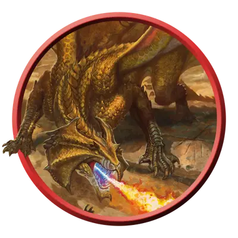

Взрослый латунный дракон
Adult Brass Dragon
Огромный Дракон (Металлический), Хаотичный Добрый

Класс Защиты 18 Инициатива +10 (20)
Хиты 172 (15к12 + 75)
Скорость 40 футов, Полёта 80 футов, Копания 30 футов
| мод | спас | ||
|---|---|---|---|
| СИЛ | 23 | +6 | +6 |
| ЛОВ | 10 | +0 | +5 |
| ТЕЛ | 21 | +5 | +5 |
| мод | спас | ||
|---|---|---|---|
| ИНТ | 14 | +2 | +2 |
| МДР | 13 | +1 | +6 |
| ХАР | 17 | +3 | +3 |
Иммунитеты Огонь
Чувства Тёмное зрение 120 футов, пассивное Восприятие 21, Слепое зрение 60 футов
Языки Общий, Драконий
Опасность 13 (10 000 опыта или 11 500 опыта в Логове; БВ +5)
Особенности
Легендарное сопротивление (3/день, или 4/день в Логове). Если дракон проваливает спасбросок, он вместо этого может преуспеть в нём.
Действия
Мультиатака. Дракон совершает три атаки Раздиранием. Он может заменить одну из этих атак использованием (А) Усыпляющего дыхания или (Б) Сотворения заклинаний (Палящий луч).
Раздирание. Бросок рукопашной атаки: +11, досягаемость 10 фт. Попадание: 17 (2к10 + 6) Рубящего урона плюс 4 (1к8) урона Огнём.
Огненное дыхание (Перезарядка 5–6). Спасбросок Ловкости: Сл 18, каждое существо в Линии длиной 60 футов и шириной 5 футов. Провал: 45 (10к8) урона Огнём. Успех: Только половина урона.
Усыпляющее дыхание. Спасбросок Телосложения: Сл 18, каждое существо в 60-футовом Конусе. Провал: Цель Недееспособна до конца своего следующего хода, а затем повторяет спасбросок. Второй провал: Цель Бессознательна на 10 минут. Этот эффект оканчивается, если цель получит урон или существо в пределах 5 футов от цели действием разбудит её.
Сотворение заклинаний. Дракон сотворяет одно из следующих заклинаний, не нуждаясь в Материальных компонентах (заклинательная характеристика — Харизма, Сл спасброска заклинаний 16, +8 к попаданию атак заклинаний):
Неограниченно: Малая иллюзия, Обнаружение магии, Палящий луч, Преображение, Временных хитов, Концентрации, Временные хиты, Разговор с животными
1/день каждое: Власть над погодой, Обнаружение мыслей
Легендарные действия
У этого существа есть 3 использования Легендарных действий (или 4 использования в его Логове); оно может немедленно после окончания хода другого существа потратить одно использование, чтобы совершить одно из следующих действий. Существо восполняет все потраченные использования в начале каждого своего хода.
Пылающий свет. Дракон использует Сотворение заклинаний (Палящий луч).
Наскок. Дракон перемещается на расстояние вплоть до половины своей Скорости и совершает одну атаку Раздиранием.
Раскалённые пески. Спасбросок Ловкости: Сл 16, одно видимое драконом существо в 120 футах. Провал: 27 (6к8) урона Огнём, и Скорость цели снижается вдвое до конца её следующего хода. Провал или успех: Дракон не может совершить это действие повторно до начала своего следующего хода.
Бонус мастерства +5
Среда обитания Пустыня
Сокровища Магические
Латунные драконы
Драконы знаний и гармонии
Общительные и открытые латунные драконы любят делиться знаниями и историями. Хотя эти металлические драконы предпочитают засушливые земли, они с удовольствием путешествуют на большие расстояния, чтобы встретиться с друзьями, поделиться знаниями и узнать последние новости. Несмотря на свой добродушный характер, латунные драконы всегда готовы вступить в сражение, обезвреживая врагов магическим сном и испепеляя их огнём.
Латунным драконам нравится тёплый климат, особенно степи и каменистые или песчаные пустыни, и они часто селятся неподалёку от крупных перекрёстков или оазисов, популярных среди путников. Этим драконам нравится принимать облик Гуманоидов и маскироваться под странствующих торговцев, учёных, сказителей и других любителей послушать чужие истории.
Латунные драконы коллекционируют самые разные вещи. Хотя эти предметы могут показаться бесполезными безделушками, каждый из них связан с некой историей: он может, например, быть ностальгическим напоминанием или свидетельством легендарного события. В кладовой латунного дракона на одной полке могут лежать шляпа старого друга и корона последнего правителя забытой династии.
Взрослые латунные драконы хранят множество секретов и обладают обширными связями. Они делятся уникальными идеями и взглядами, которые собрали со всех уголков мира, и с жаром противостоят лжи аферистов и злодеев-манипуляторов.
Логова латунных драконов
Латунные драконы обычно обитают в тайных пещерах и каньонах вблизи оживлённых маршрутов.
Местность, в которой находится логово взрослого или древнего латунного дракона, искажается из-за его магии, что создаёт следующие эффекты:
• Миражи. Пока дракон находится в логове, он может сотворять заклинание Образ, не нуждаясь в Материальных компонентах (заклинательная характеристика — та же, что для его действия Сотворение заклинаний). При сотворении заклинания таким образом его дистанция равна 1 миле. Дракону не нужно видеть точку, где появляется иллюзия.
• Освежающая вода. Вода в пределах 1 мили от логова обладает магическим освежающим эффектом. Испившее такую воду существо получает 2к4 Временных Хитов, а дракон мгновенно узнаёт о присутствии этого существа.
Если дракон умирает или перемещает своё логово в другое место, все эти эффекты мгновенно исчезают.